|
|
< Day Day Up > |
|
In this section, we consider the problem of finding large primes. We begin with a discussion of the density of primes, proceed to examine a plausible (but incomplete) approach to primality testing, and then present an effective randomized primality test due to Miller and Rabin.
For many applications (such as cryptography), we need to find large "random" primes. Fortunately, large primes are not too rare, so that it is not too time-consuming to test random integers of the appropriate size until a prime is found. The prime distribution function π(n) specifies the number of primes that are less than or equal to n. For example, π(10) = 4, since there are 4 prime numbers less than or equal to 10, namely, 2, 3, 5, and 7. The prime number theorem gives a useful approximation to π(n).
The approximation n/ ln n gives reasonably accurate estimates of π(n) even for small n. For example, it is off by less than 6% at n = 109, where π(n) = 50,847,534 and n/ ln n ≈ 48,254,942. (To a number theorist, 109 is a small number.)
We can use the prime number theorem to estimate the probability that a randomly chosen integer n will turn out to be prime as 1/ ln n. Thus, we would need to examine approximately ln n integers chosen randomly near n in order to find a prime that is of the same length as n. For example, to find a 512-bit prime might require testing approximately ln 2512 ≈ 355 randomly chosen 512-bit numbers for primality. (This figure can be cut in half by choosing only odd integers.)
In the remainder of this section, we consider the problem of determining whether or not a large odd integer n is prime. For notational convenience, we assume that n has the prime factorization
| (31.37) | 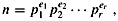 |
where r ≥ 1, p1, p2, ..., pr are the prime factors of n, and e1, e2, ..., er are positive integers. Of course, n is prime if and only if r = 1 and e1 = 1.
One simple approach to the problem of testing for primality is trial division. We try dividing n by each integer 2, 3, ..., 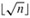. (Again, even integers greater than 2 may be skipped.) It is easy to see that n is prime if and only if none of the trial divisors divides n. Assuming that each trial division takes constant time, the worst-case running time is 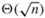, which is exponential in the length of n. (Recall that if n is encoded in binary using β bits, then β = ⌈lg(n + 1)⌉, and so 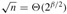.) Thus, trial division works well only if n is very small or happens to have a small prime factor. When it works, trial division has the advantage that it not only determines whether n is prime or composite, but also determines one of n's prime factors if n is composite.
In this section, we are interested only in finding out whether a given number n is prime; if n is composite, we are not concerned with finding its prime factorization. As we shall see in Section 31.9, computing the prime factorization of a number is computationally expensive. It is perhaps surprising that it is much easier to tell whether or not a given number is prime than it is to determine the prime factorization of the number if it is not prime.
We now consider a method for primality testing that "almost works" and in fact is good enough for many practical applications. A refinement of this method that removes the small defect will be presented later. Let 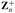 denote the nonzero elements of Zn:
If n is prime, then 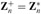.
We say that n is a base-a pseudoprime if n is composite and
| (31.38) | 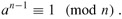 |
Fermat's theorem (Theorem 31.31) implies that if n is prime, then n satisfies equation (31.38) for every a in 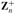. Thus, if we can find any 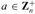 such that n does not satisfy equation (31.38), then n is certainly composite. Surprisingly, the converse almost holds, so that this criterion forms an almost perfect test for primality. We test to see if n satisfies equation (31.38) for a = 2. If not, we declare n to be composite. Otherwise, we output a guess that n is prime (when, in fact, all we know is that n is either prime or a base-2 pseudoprime).
The following procedure pretends in this manner to be checking the primality of n. It uses the procedure MODULAR-EXPONENTIATION from Section 31.6. The input n is assumed to be an odd integer greater than 2.
PSEUDOPRIME(n) 1 if MODULAR-EXPONENTIATION(2 = n - 1, n) ≢ 1 (mod n) 2 then return COMPOSITE ▹ Definitely. 3 else return PRIME ▹ We hope!
This procedure can make errors, but only of one type. That is, if it says that n is composite, then it is always correct. If it says that n is prime, however, then it makes an error only if n is a base-2 pseudoprime.
How often does this procedure err? Surprisingly rarely. There are only 22 values of n less than 10,000 for which it errs; the first four such values are 341, 561, 645, and 1105. It can be shown that the probability that this program makes an error on a randomly chosen β-bit number goes to zero as β ← ∞. Using more precise estimates due to Pomerance [244] of the number of base-2 pseudoprimes of a given size, we may estimate that a randomly chosen 512-bit number that is called prime by the above procedure has less than one chance in 1020 of being a base-2 pseudoprime, and a randomly chosen 1024-bit number that is called prime has less than one chance in 1041 of being a base-2 pseudoprime. So if you are merely trying to find a large prime for some application, for all practical purposes you almost never go wrong by choosing large numbers at random until one of them causes PSEUDOPRIME to output PRIME. But when the numbers being tested for primality are not randomly chosen, we need a better approach for testing primality. As we shall see, a little more cleverness, and some randomization, will yield a primality-testing routine that works well on all inputs.
Unfortunately, we cannot entirely eliminate all the errors by simply checking equation (31.38) for a second base number, say a = 3, because there are composite integers n that satisfy equation (31.38) for all 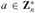. These integers are known as Carmichael numbers. The first three Carmichael numbers are 561, 1105, and 1729. Carmichael numbers are extremely rare; there are, for example, only 255 of them less than 100,000,000. Exercise 31.8-2 helps explain why they are so rare.
We next show how to improve our primality test so that it won't be fooled by Carmichael numbers.
The Miller-Rabin primality test overcomes the problems of the simple test PSEUDOPRIME with two modifications:
It tries several randomly chosen base values a instead of just one base value.
While computing each modular exponentiation, it notices if a nontrivial square root of 1, modulo n, is discovered during the final set of squarings. If so, it stops and outputs COMPOSITE. Corollary 31.35 justifies detecting composites in this manner.
The pseudocode for the Miller-Rabin primality test follows. The input n > 2 is the odd number to be tested for primality, and s is the number of randomly chosen base values from 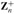 to be tried. The code uses the random-number generator RANDOM described on page 94: RANDOM(1, n - 1) returns a randomly chosen integer a satisfying 1 ≤ a ≤ n - 1. The code uses an auxiliary procedure WITNESS such that WITNESS(a, n) is TRUE if and only if a is a "witness" to the compositeness of n-that is, if it is possible using a to prove (in a manner that we shall see) that n is composite. The test WITNESS(a, n) is an extension of, but more effective than, the test
an-1 ≢ 1 (mod n)
that formed the basis (using a = 2) for PSEUDOPRIME. We first present and justify the construction of WITNESS, and then show how it is used in the Miller-Rabin primality test. Let n -1 = 2tu where t ≥ 1 and u is odd; i.e., the binary representation of n - 1 is the binary representation of the odd integer u followed by exactly t zeros. Therefore, 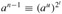 (mod n), so that we can compute an-1 mod n by first computing au mod n and then squaring the result t times successively.
WITNESS(a, n) 1 let n - 1 = 2tu, where t ≥ 1 and u is odd 2 x0 ← MODULAR-EXPONENTIATION(a, u, n) 3 for i ← 1 to t 4 do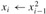 mod n 5 if xi = 1 and xi-1 ≠ 1 and xi-1 ≠ n - 1 6 then return TRUE 7 if xt ≠ 1 8 then return TRUE 9 return FALSE
This pseudocode for WITNESS computes an-1 mod n by first computing the value x0 = au mod n in line 2, and then squaring the result t times in a row in the for loop of lines 3-6. By induction on i, the sequence x0, x1, ..., xt of values computed satisfies the equation 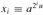 (mod n) for i = 0, 1, ..., t, so that in particular xt ≢ an-1 (mod n). Whenever a squaring step is performed on line 4, however, the loop may terminate early if lines 5-6 detect that a nontrivial square root of 1 has just been discovered. If so, the algorithm stops and returns TRUE. Lines 7-8 return TRUE if the value computed for xt ≢ an-1 (mod n) is not equal to 1, just as the PSEUDOPRIME procedure returns COMPOSITE in this case. Line 9 returns FALSE if we haven't returned TRUE in lines 6 or 8.
We now argue that if WITNESS(a, n) returns TRUE, then a proof that n is composite can be constructed using a.
If WITNESS returns TRUE from line 8, then it has discovered that xt = an-1 mod n ≠ 1. If n is prime, however, we have by Fermat's theorem (Theorem 31.31) that an-1 ≢ 1 (mod n) for all 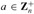. Therefore, n cannot be prime, and the equation an-1 mod n ≠ 1 is a proof of this fact.
If WITNESS returns TRUE from line 6, then it has discovered that xi-1 is a nontrivial square root of xi = 1, modulo n, since we have that xi-1 ≢ ±1 (mod n) yet 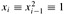 (mod n). Corollary 31.35 states that only if n is composite can there be a nontrivial square root of 1 modulo n, so that a demonstration that xi-1 is a nontrivial square root of 1 modulo n is a proof that n is composite.
This completes our proof of the correctness of WITNESS. If the invocation WITNESS(a, n) outputs TRUE, then n is surely composite, and a proof that n is composite can be easily determined from a and n.
At this point we briefly present an alternative description of the behavior of WITNESS as a function of the sequence X = 〈x0, x1, ..., xt〉, which you may find useful later on, when we analyze the efficiency of the Miller-Rabin primality test. Note that if xi = 1 for some 0 ≤ i < t, WITNESS might not compute the rest of the sequence. If it were to do so, however, each value xi+1, xi+2, ..., xt would be 1, and we consider these positions in the sequence X as being all 1's. We have four cases:
X = 〈..., d〉, where d ≠ 1: the sequence X does not end in 1. Return TRUE; a is a witness to the compositeness of n (by Fermat's Theorem).
X = 〈1, 1, ..., 1〉: the sequence X is all 1's. Return FALSE; a is not a witness to the compositeness of n.
X = 〈..., -1, 1, ..., 1〉: the sequence X ends in 1, and the last non-1 is equal to -1. Return FALSE; a is not a witness to the compositeness of n.
X = 〈..., d, 1, ..., 1〉, where d ≠ ±1: the sequence X ends in 1, but the last non-1 is not -1. Return TRUE; a is a witness to the compositeness of n, since d is a nontrivial square root of 1.
We now examine the Miller-Rabin primality test based on the use of WITNESS. Again, we assume that n is an odd integer greater than 2.
MILLER-RABIN(n, s) 1 for j ← 1 to s 2 do a ← RANDOM(1, n - 1) 3 if WITNESS(a, n) 4 then return COMPOSITE ▹ Definitely. 5 return PRIME ▹ Almost surely.
The procedure MILLER-RABIN is a probabilistic search for a proof that n is composite. The main loop (beginning on line 1) picks s random values of a from 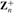 (line 2). If one of the a's picked is a witness to the compositeness of n, then MILLER-RABIN outputs COMPOSITE on line 4. Such an output is always correct, by the correctness of WITNESS. If no witness can be found in s trials, MILLER-RABIN assumes that this is because there are no witnesses to be found, and therefore n is assumed to be prime. We shall see that this output is likely to be correct if s is large enough, but that there is a small chance that the procedure may be unlucky in its choice of a's and that witnesses do exist even though none has been found.
To illustrate the operation of MILLER-RABIN, let n be the Carmichael number 561, so that n - 1 = 560 = 24 · 35. Supposing that a = 7 is chosen as a base, Figure 31.4 shows that WITNESS computes x0 = a35 = 241 (mod 561) and thus computes the sequence X = 〈241, 298, 166, 67, 1〉. Thus, a nontrivial square root of 1 is discovered in the last squaring step, since a280 ≡ 67 (mod n) and a560 ≡ 1 (mod n). Therefore, a = 7 is a witness to the compositeness of n, WITNESS(7, n) returns TRUE, and MILLER-RABIN returns COMPOSITE.
If n is a β-bit number, MILLER-RABIN requires O(sβ) arithmetic operations and O(sβ3) bit operations, since it requires asymptotically no more work than s modular exponentiations.
If MILLER-RABIN outputs PRIME, then there is a small chance that it has made an error. Unlike PSEUDOPRIME, however, the chance of error does not depend on n; there are no bad inputs for this procedure. Rather, it depends on the size of s and the "luck of the draw" in choosing base values a. Also, since each test is more stringent than a simple check of equation (31.38), we can expect on general principles that the error rate should be small for randomly chosen integers n. The following theorem presents a more precise argument.
If n is an odd composite number, then the number of witnesses to the compositeness of n is at least (n - 1)/2.
Proof The proof shows that the number of nonwitnesses is at most (n - 1)/2, which implies the theorem.
We start by claiming that any nonwitness must be a member of 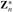. Why? Consider any nonwitness a. It must satisfy an-1 ≡ 1 (mod n) or, equivalently, a · an-2 ≡ 1 (mod n). Thus, there is a solution to the equation ax ≡ 1 (mod n), namely an-2. By Corollary 31.21, gcd(a, n) | 1, which in turn implies that gcd(a, n) = 1. Therefore, a is a member of 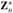; all nonwitnesses belong to .
To complete the proof, we show that not only are all nonwitnesses contained in 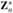, they are all contained in a proper subgroup B of 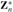 (recall that we say B is a proper subgroup of when B is subgroup of but B is not equal to 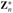). By Corollary 31.16, we then have 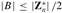. Since 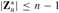, we obtain |B| ≤ (n - 1)/2. Therefore, the number of nonwitnesses is at most (n - 1)/2, so that the number of witnesses must be at least (n - 1)/2.
We now show how to find a proper subgroup B of 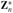 containing all of the nonwitnesses. We break the proof into two cases.
Case 1: There exists an 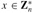 such that
xn-1 ≢ 1 (mod n).
In other words, n is not a Carmichael number. Because, as we noted earlier, Carmichael numbers are extremely rare, case 1 is the main case that arises "in practice" (e.g., when n has been chosen randomly and is being tested for primality).
Let 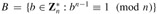. Clearly, B is nonempty, since 1 ∈ B. Since B is closed under multiplication modulo n, we have that B is a subgroup of 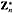 by Theorem 31.14. Note that every nonwitness belongs to B, since a nonwitness a satisfies an-1 ≡ 1 (mod n). Since 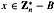, we have that B is a proper subgroup of .
Case 2: For all 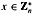,
| (31.39) | 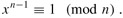 |
In other words, n is a Carmichael number. This case is extremely rare in practice. However, the Miller-Rabin test (unlike a pseudo-primality test) can efficiently determine the compositeness of Carmichael numbers, as we now show.
In this case, n cannot be a prime power. To see why, let us suppose to the contrary that n = pe, where p is a prime and e > 1. We derive a contradiction as follows. Since n is assumed to be odd, p must also be odd. Theorem 31.32 implies that 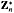 is a cyclic group: it contains a generator g such that 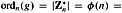 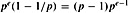. By equation (31.39), we have gn-1 ≡ 1 (mod n). Then the discrete logarithm theorem (Theorem 31.33, taking y = 0) implies that n - 1 ≡ 0 (mod φ(n)), or
(p - 1)pe-1 | pe - 1.
This is a contradiction for e > 1, since (p - 1) pe-1 is divisible by the prime p but pe - 1 is not. Thus, n is not a prime power.
Since the odd composite number n is not a prime power, we decompose it into a product n1n2, where n1 and n2 are odd numbers greater than 1 that are relatively prime to each other. (There may be several ways to do this, and it doesn't matter which one we choose. For example, if 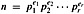, then we can choose 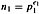 and 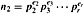.)
Recall that we define t and u so that n - 1 = 2tu, where t ≥ 1 and u is odd, and that for an input a, the procedure WITNESS computes the sequence
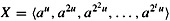
(all computations are performed modulo n).
Let us call a pair (v, j) of integers acceptable if 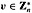, j ∈ {0, 1, ..., t}, and
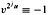 (mod n).
Acceptable pairs certainly exist since u is odd; we can choose v = n -1 and j = 0, so that (n - 1, 0) is an acceptable pair. Now pick the largest possible j such that there exists an acceptable pair (v, j), and fix v so that (v, j) is an acceptable pair. Let
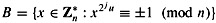.
Since B is closed under multiplication modulo n, it is a subgroup of 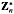. By Corollary 31.16, therefore, |B| divides 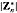. Every nonwitness must be a member of B, since the sequence X produced by a nonwitness must either be all 1's or else contain a -1 no later than the jth position, by the maximality of j. (If (a, j′) is acceptable, where a is a nonwitness, we must have j′ ≤ j by how we chose j.)
We now use the existence of v to demonstrate that there exists a 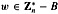. Since 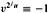 (mod n), we have 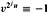 (mod n1) by Corollary 31.29 to the Chinese remainder theorem. By Corollary 31.28, there is a w simultaneously satisfying the equations
|
w |
≡ |
v |
(mod n1), |
|
w |
≡ |
1 |
(mod n2). |
Therefore,
|
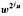 |
≡ |
-1 |
(mod n1), |
|
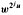 |
≡ |
1 |
(mod n2). |
By Corollary 31.29, (mod n1) implies (mod n), and (mod n2) implies (mod n). Hence, (mod n), and so w ∉ B.
It remains to show that , which we do by first working separately modulo n1 and modulo n2. Working modulo n1, we observe that since , we have that gcd(v, n) = 1, and so also gcd(v, n1) = 1; if v doesn't have any common divisors with n, it certainly doesn't have any common divisors with n1. Since w ≡ v (mod n1), we see that gcd(w, n1) = 1. Working modulo n2, we observe that w ≡ 1 (mod n2) implies gcd(w, n2) = 1. To combine these results, we use Theorem 31.6, which implies that gcd(w, n1n2) = gcd(w, n) = 1. That is, .
Therefore , and we finish case 2 with the conclusion that B is a proper subgroup of .
In either case, we see that the number of witnesses to the compositeness of n is at least (n - 1)/2.
For any odd integer n > 2 and positive integer s, the probability that MILLER-RABIN(n, s) errs is at most 2-s.
Proof Using Theorem 31.38, we see that if n is composite, then each execution of the for loop of lines 1-4 has a probability of at least 1/2 of discovering a witness x to the compositeness of n. MILLER-RABIN makes an error only if it is so unlucky as to miss discovering a witness to the compositeness of n on each of the s iterations of the main loop. The probability of such a string of misses is at most 2-s.
Thus, choosing s = 50 should suffice for almost any imaginable application. If we are trying to find large primes by applying MILLER-RABIN to randomly chosen large integers, then it can be argued (although we won't do so here) that choosing a small value of s (say 3) is very unlikely to lead to erroneous results. That is, for a randomly chosen odd composite integer n, the expected number of nonwitnesses to the compositeness of n is likely to be much smaller than (n - 1)/2. If the integer n is not chosen randomly, however, the best that can be proven is that the number of nonwitnesses is at most (n - 1)/4, using an improved version of Theorem 31.39. Furthermore, there do exist integers n for which the number of nonwitnesses is (n - 1)/4.
Prove that if an odd integer n > 1 is not a prime or a prime power, then there exists a nontrivial square root of 1 modulo n.
It is possible to strengthen Euler's theorem slightly to the form
aλ(n) ≡ 1 (mod n) for all ,
where and λ(n) is defined by
| (31.40) |
Prove that λ(n) | φ(n). A composite number n is a Carmichael number if λ(n) | n - 1. The smallest Carmichael number is 561 = 3 · 11 · 17; here, λ(n) = lcm(2, 10, 16) = 80, which divides 560. Prove that Carmichael numbers must be both "square-free" (not divisible by the square of any prime) and the product of at least three primes. For this reason, they are not very common.
|
|
< Day Day Up > |
|